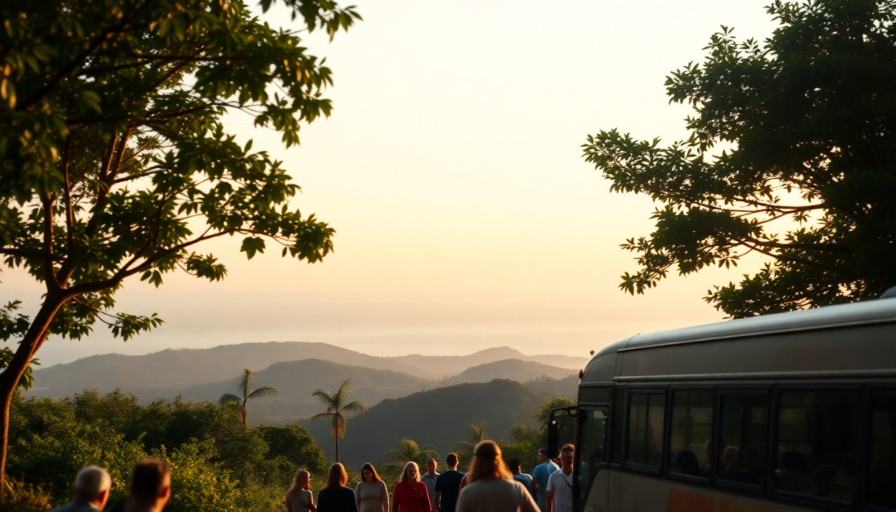

Getting Around Costa Rica: Buses, Car Rentals & Shuttles

I landed in San José with a loose itinerary and no clue how I’d actually move between the cloud forests and beaches. After three weeks piecing together buses, rental cars, and shared shuttles, I learned the hard way what works and what’s a waste of time. Here’s the real deal on getting around Costa Rica without getting stuck or overpaying.
Should you rent a car in Costa Rica?
Renting a car gives you freedom, but only if you’re ready for rough roads and aggressive drivers. We picked up a Suzuki Vitara from Alamo at Juan Santamaría International Airport and headed straight for the mountains. The 4x4 was non-negotiable—we hit unpaved stretches near Arenal where a sedan would’ve bottomed out. Budget around $50–$70 per day, plus mandatory liability insurance (about $15–$20 daily) that rental companies push hard. Drive during daylight; potholes and unmarked speed bumps (called muertos) appear out of nowhere after dark. We avoided the Route 27 toll road to Manuel Antonio during rush hour because traffic jams near Jaco can add an hour.
- 4x4 required for Arenal and remote beaches; stick to SUVs from Vamos Rent-a-Car or Adobe.
- Insurance trap: Your credit card coverage often won’t work here—buy the local policy to skip headaches.
- Parking: In San José, use guarded lots near Barrio Escalante (around $10/day) to avoid break-ins.
Are public buses in Costa Rica reliable?
Public buses are cheap and surprisingly efficient if you’re patient. I took the Tracopa bus from San José to Quepos (the gateway to Manuel Antonio) for about $9—three hours of winding roads with AC that barely worked, but it dropped me two blocks from the national park entrance. For Arenal, the Transnorte bus from San José’s Coca-Cola terminal runs daily to La Fortuna for around $8. Buses don’t have set schedules online; check thebusguide.com or ask at the terminal the day before. The catch: luggage space fills fast, and breakdowns happen. I watched a bus blow a tire near Ciudad Quesada and waited two hours for a replacement.
- Terminal Coca-Cola: Chaotic but central in San José; keep bags on your lap.
- Quepos to Manuel Antonio: Local buses run every 30 minutes for $0.50—skip the $20 taxi.
- Guanacaste buses: Pulmitan runs from San José to Liberia ($10), then connect to Tamarindo or Playas del Coco on local routes.
When should you book a shared shuttle?
Shared shuttles are the middle ground: pricier than buses but faster and door-to-door. We booked Interbus from La Fortuna to Monteverde for $55 per person—a 3.5-hour trip that would’ve taken two buses and a ferry. The van was clean, the driver spoke English, and we stopped at a soda (local diner) near Tilarán for decent gallo pinto. For longer hauls, like San José to Guanacaste (four hours), Gray Line shuttles run $60–$80. Book at least 48 hours ahead during high season (December–April); I saw travelers stranded in San José because shuttles were full.
- Interbus: Covers most routes; reliable AC and luggage racks.
- SharedShuttle.com: Good for last-minute bookings, but prices spike 20%.
- Avoid: Shuttles from San José to Manuel Antonio if you’re solo—the bus is $9 and only 30 minutes slower.
Is it worth flying between regions?
Domestic flights save time but cost more than you’d expect. I flew Sansa Airlines from San José to Quepos for $95 one-way—a 25-minute flight versus a three-hour bus ride. The plane was a 12-seater Cessna, and the runway at Quepos Airport is basically a strip of asphalt between hills. For Guanacaste, Nature Air flies from San José to Tamarindo (about $120) if you’re short on time. Baggage is strict: 25 pounds total, including carry-on. I saw a couple forced to leave a suitcase behind at the San José domestic terminal because it weighed 28 pounds.
- Sansa Airlines: More frequent flights; book on their website for best prices.
- Liberia Airport: Fly direct from San José to Daniel Oduber Quirós International Airport to skip the four-hour drive.
- Not worth it: Short hops like San José to Arenal (bus is 3 hours; flight is 40 minutes but $130).
What’s the best way to get from San José to Manuel Antonio?
The bus is the budget winner, but a rental car gives you flexibility for side trips. I drove the Route 27 to Route 34 in about 2.5 hours, stopping at Tárcoles Bridge to see crocodiles (free pull-off, worth 10 minutes). The bus from San José’s Tracopa station costs $9 and drops you at Quepos’s central market—then a $1 local bus to Manuel Antonio. If you’re in a group of three or more, a shared shuttle from Interbus ($65 per person) beats the hassle of parking in Manuel Antonio, where lots charge $15–$20 per day. I parked my rental near Hotel Si Como No for $12 overnight, but spaces fill by 10 AM.
- Drive time: 2.5–3 hours with light traffic; avoid Friday afternoons.
- Tárcoles Bridge: Crocodile spotting is free; don’t pay the parking hawkers.
- Quepos to park entrance: Local bus runs 5 AM–9 PM; taxis ask $10 but negotiate to $5.
How do you get around Arenal without a car?
Arenal is walkable if you stay in La Fortuna town, but the volcano and hot springs require wheels. We rented bikes from Arenal Bike Rental ($15/day) to reach La Fortuna Waterfall—a steep 20-minute ride downhill, but the climb back is brutal. For Tabacón Hot Springs, we took a taxi ($10 each way from town) because the resort doesn’t allow walk-ins without a booking. The Arenal Volcano National Park entrance is 6 km from town; a shared taxi costs $5 per person, or you can hitch a ride with a tour group from Arenal Backpackers Resort for $3.
- Bikes: Good for flat terrain; avoid if you’re not fit for hills.
- Taxi mafia: Drivers in La Fortuna agree on prices; a trip to El Salto Rope Swing is $4.
- Shuttles to Monteverde: Desafio Adventure Company runs a jeep-boat-jeep combo ($60) that’s faster than driving.
What’s the deal with transportation in Guanacaste?
Guanacaste’s beaches are spread out, so a car is almost essential. We drove from Liberia Airport to Tamarindo in 1.5 hours on paved roads, then hit Playa Conchal via a bumpy dirt track that required low gear. Buses run from Liberia to Playas del Coco ($2) and Tamarindo ($5), but they’re infrequent—one every two hours. For Santa Teresa on the Nicoya Peninsula, we took a ferry from Puntarenas to Paquera ($2 per person) and drove 45 minutes; the ferry runs hourly but fills with trucks. Skip the rental car if you’re staying at an all-inclusive like Riu Guanacaste—their shuttles cover the resort area.
- Liberia Airport: Pick up a 4x4 from Budget; they have a desk right at arrivals.
- Tamarindo to Nosara: 2-hour drive on gravel; a shared shuttle ($35) is smoother.
- Ferry tip: Book tickets online for Paquera during peak season to avoid a 2-hour wait.
FAQ
Is it safe to drive at night in Costa Rica? No, I’d avoid it. Roads lack streetlights, potholes are invisible, and livestock (especially cows near Arenal) wander onto pavement after dark. We drove back to San José from Manuel Antonio once at 7 PM and nearly hit a horse near Parrita. Stick to daylight hours, ideally between 6 AM and 4 PM.
Do I need to tip shuttle drivers in Costa Rica? Yes, but modestly. Shared shuttle drivers expect around $2–$5 per person for a long trip. I tipped an Interbus driver $3 after he helped load our bags in La Fortuna. For private transfers, 10% of the fare is standard—but don’t feel pressured if service is poor.
Can I use Uber in Costa Rica? Uber works in San José and Jaco, but not in Arenal or Manuel Antonio. I took an Uber from the San José airport to Barrio Escalante for $8—half a taxi’s price. Outside the capital, drivers use WhatsApp or local taxi apps; ask your hotel for a reliable contact.
Conclusion
- Rent a 4x4 from Alamo or Vamos if you’re covering multiple regions; skip it for solo trips and stick to buses.
- Book shared shuttles from Interbus for long hauls like San José to La Fortuna—they’re worth the $55.
- Use public buses for short hops: Quepos to Manuel Antonio for $0.50 beats any shuttle.
- Fly Sansa Airlines only for time-sensitive routes like San José to Quepos; otherwise, the bus saves $80.
- Avoid night driving everywhere, and always carry cash for tolls and taxis—cards are rare outside hotels.